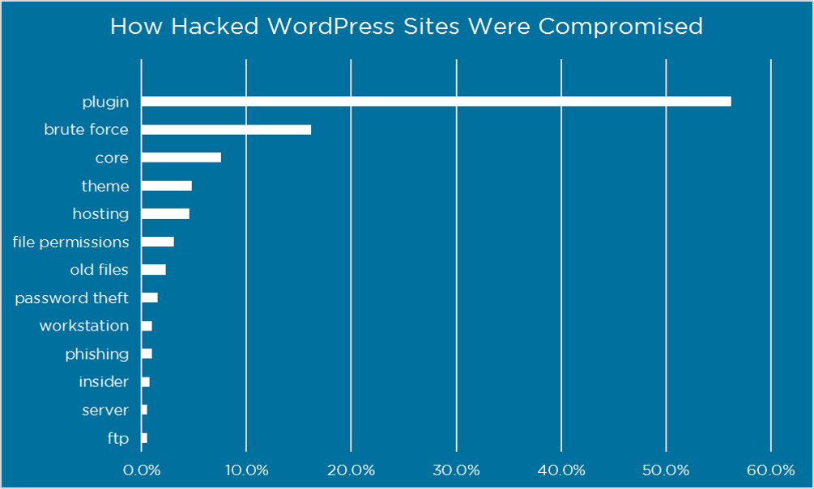
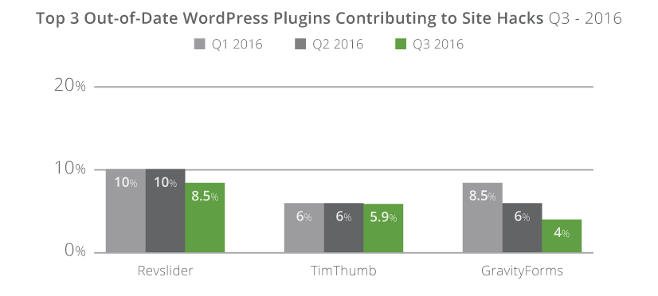

WordPress Lancaster Meetup
Wifi: CFGuest
CoworkingLov3
Keeping Your WordPress Site Secure
The Basics
Is WordPress secure?
Let's look at some data.
Based on survey from Wordfence

Sucuri’s 2016 report, just 3 plugins accounted for over 15% of the hacked websites they looked at.

If most websites are hacked through a plugin exploit
and most plugin vulternabilites have been patched
then keeping your site secured is your responsible.
Recommendation #1
Update themes/plugins and core
- Make a plan for updates
- Don't forget paid themes/plugins
- Not comfortable? .. then hire someone
Recommendation #2
Use better passwords
- Use a password management system
- Use unique passwords per website
- Don't use "admin"
Recommendation #3
Use a good web host
- Avoid spillover effects
- Up to date web server software
- Story about WP Engine (Christmas 2015)